Des voitures qui roulent, contrôlées et documentées. Chaque fiche décrit l'état réel de l'auto ; l'historique complet est communiqué sur demande.
Des bases saines, choisies pour leur potentiel. Elles s'achètent en l'état, ou se réservent pour être restaurées selon votre cahier des charges, sous notre supervision.
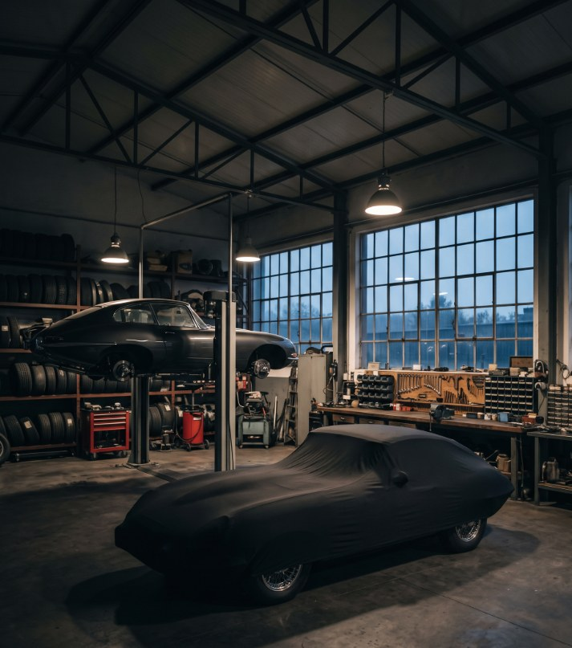
Une voiture ancienne se choisit, se comprend, puis se transmet. Notre métier est d'en garantir chaque étape.
MCC Motors réunit une longue pratique des voitures classiques, anglaises en particulier, un réseau d'ateliers partenaires en France et en Europe, et la maîtrise des démarches d'immatriculation des véhicules de collection.
Un service réservé à nos clients, en particulier à ceux qui ont acquis l'un de nos projets.
Nous accompagnons nos clients tout au long de leur restauration : suivi des travaux, recherche et commande des pièces, en France comme à l'étranger, auprès de fournisseurs chez qui nous disposons de comptes professionnels.
Nous ne vendons pas de pièces au détail, à l'exception de celles présentées ci-dessous, issues de nos projets ou de nos stocks, contrôlées avant la vente.
Nous sommes votre intermédiaire unique : nous commandons les travaux, nous les suivons, nous les contrôlons et nous les documentons, de la première expertise au dossier final.
Nos ateliers partenaires ont été choisis parce qu'ils respectent un cahier des charges exigeant, tant sur le suivi humain que sur la qualité du travail.
Ils savent s'adapter au budget et au degré de finition attendu par chaque client. Surtout, nous avons déjà travaillé avec chacun d'entre eux : leurs références sont connues, leurs réalisations vérifiées.
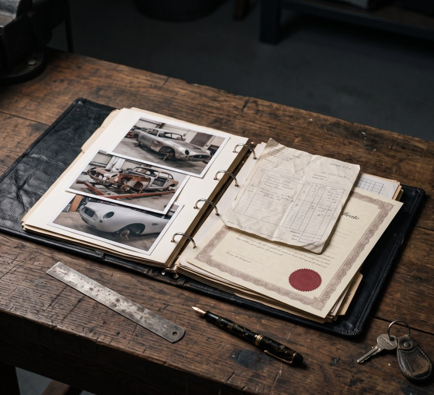
Chaque métier confié à l'atelier partenaire le plus juste pour votre auto.
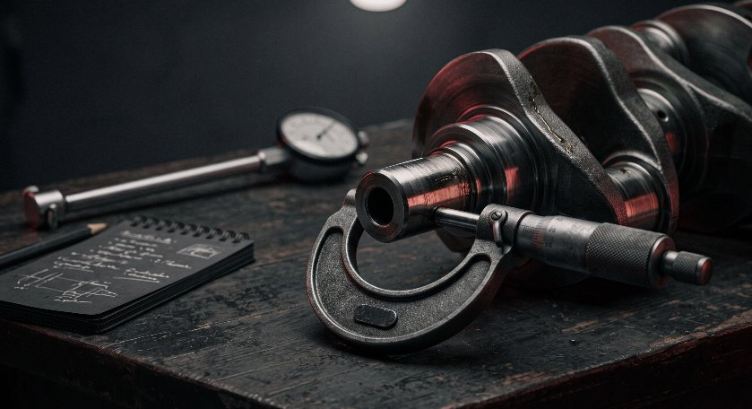
MoteurMesure complète des pièces moteur avant toute décision.
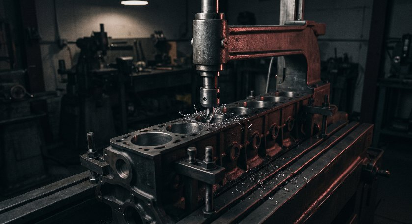
MoteurRéalésage, vilebrequin, culasse, équilibrage.
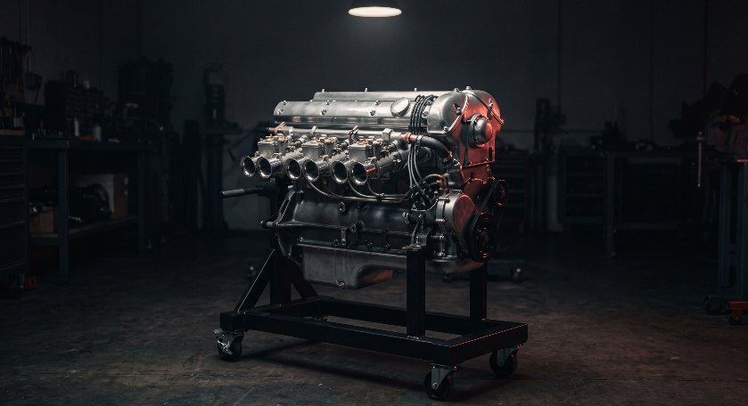
MoteurRemontage moteur, boîte, pont, trains roulants, freinage.
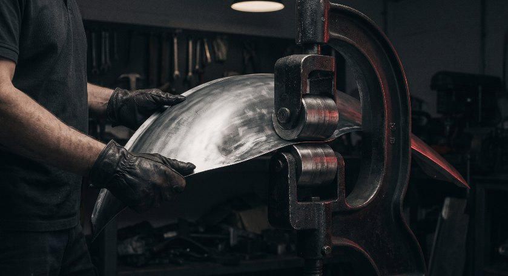
CaisseTôlerie, remplacement de panneaux, ajustage des ouvrants.
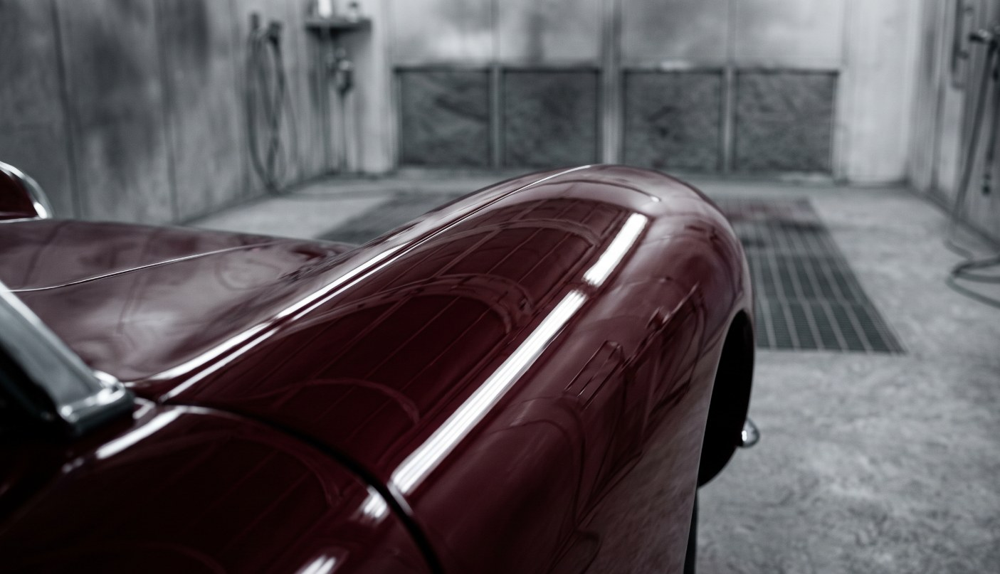
CaisseApprêts, teinte d'origine ou personnalisée, finition.
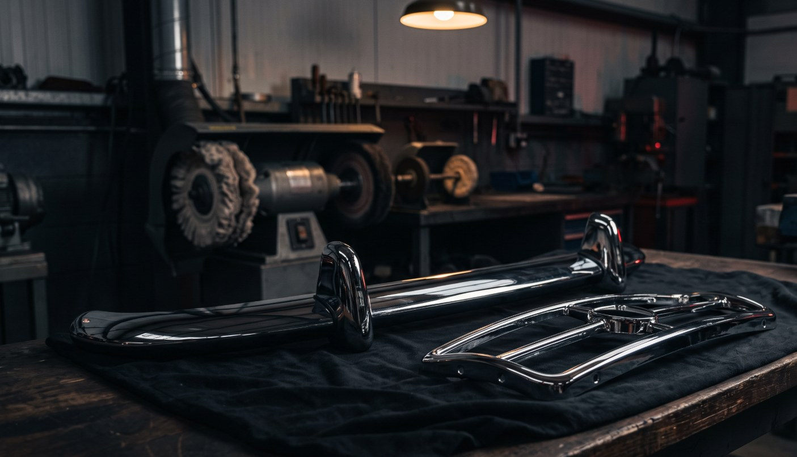
CaissePare-chocs, entourages et accastillage rechromés.
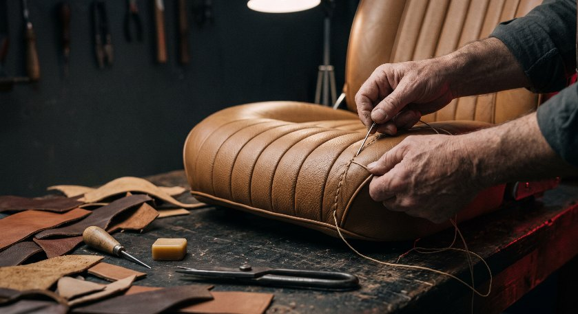
IntérieurSièges, garnitures, moquettes, cuirs d'époque.
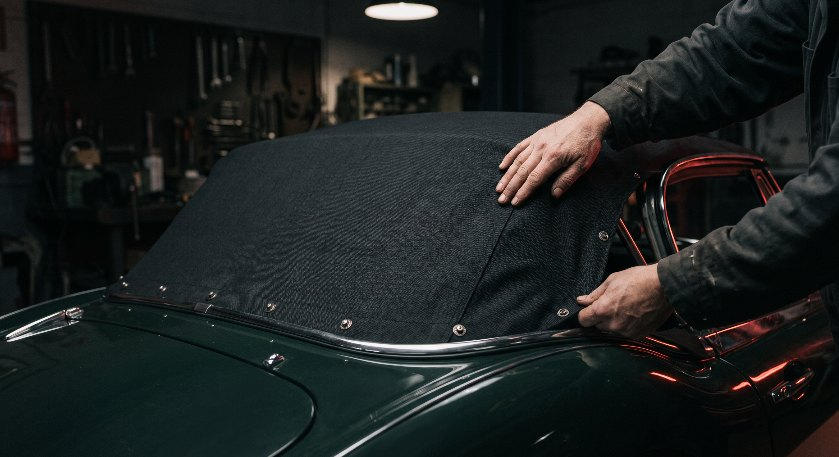
IntérieurCapotes sur mesure, réglage et étanchéité.
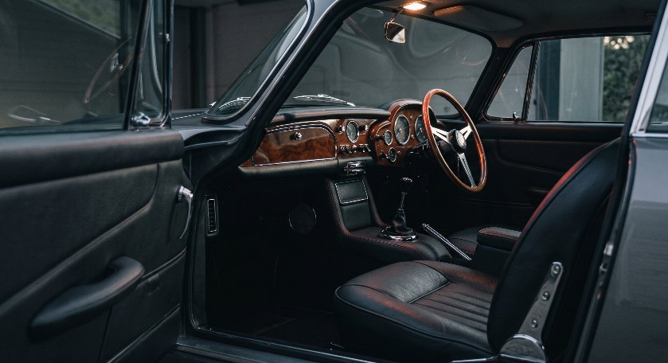
IntérieurPlanche de bord, instruments, boiseries, faisceau.
De la Triumph TR3 à l'Aston Martin DB6, un budget juste pour chaque auto.
Ateliers français et européens · Sourcing de pièces dans le monde entierAchat, vente, restauration ou pièce : décrivez-nous votre projet, nous vous répondons personnellement.